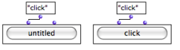
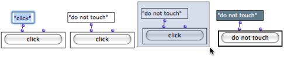
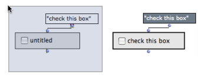

OpenMusic DocumentationHiérarchie de section : OM 6.6 User Manual > Visual Programming II > Interface Boxes > General Features
OpenMusic DocumentationHiérarchie de section : OM 6.6 User Manual > Visual Programming II > Interface Boxes > General Features
Navigation : page précédente | page suivante
Attention, votre navigateur ne supporte pas le javascript ou celui-ci à été désactivé. Certaines fonctionnalités de ce guide sont restreintes.
General Features
To access dialog Items, go to Classes / Kernel / Interface Boxes / in the OM menus.
Displaying the Dialog Items
Miniview
The actual interface of a dialog box is displayed via the miniview. To display a miniview, select a box and press |

Diplaying the interface for the classes TEXT-BOX and BUTTON
|
Appellation : Displaying and Editing the "Text" Argument

A button-box before and after the evaluation : "click" is a default text argument.
|
Most interface boxes have a display text, generally as a first input. The text connected to the input is displayed on the interface when the box is evaluated (if not in locked mode). |
To change the value of the "text" argument :
click or
SHIFTclick on the first input to edit it – don't forget to validateselect and evaluate the box : press
v.

Selecting Boxes
Selection, Move, Resize...


|
Once their miniview is displayed, interface boxes cannot be selected with a mouse click, due to the nature of the interface. |
To select a box, click on the border of the box, or drag the mouse over the whole box. The box can then be resized or evaluated as usual.

Items can be also moved and resized without the mouse, to a certain extent :
use the
→arrows keys – useSHIFTto go fasterpress
ito restore the initial size.
Hiding the Box Contents
An easy way to select and move/resize the interface box is to temporarily hide their contenst with m.

Références :
Plan :
Navigation : page précédente | page suivante
A propos...(c) Ircam - Centre Pompidou